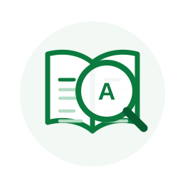

Agenda 2030
Plano global da ONU com 17 Objetivos de Desenvolvimento Sustentável e 169 metas a serem alcançadas até 2030 por governos, empresas e sociedade civil.
Termos técnicos de contratações públicas sustentáveis explicados de forma simples e objetiva.

Plano global da ONU com 17 Objetivos de Desenvolvimento Sustentável e 169 metas a serem alcançadas até 2030 por governos, empresas e sociedade civil.
Avaliação dos impactos ambientais de um produto ao longo de toda a sua existência: extração da matéria-prima, produção, transporte, uso e descarte.
Aquisições da administração pública que consideram, além do preço, os impactos ambientais, sociais e econômicos ao longo do ciclo de vida do objeto contratado.
Requisito ambiental, social ou econômico inserido no planejamento e nos documentos da contratação para reduzir impactos negativos e ampliar benefícios.
Modelo econômico que mantém materiais em uso pelo maior tempo possível por meio de reparo, reuso, remanufatura e reciclagem, reduzindo a extração de recursos virgens.
Documento que torna pública a licitação e fixa suas regras, incluindo objeto, critérios de julgamento, requisitos de habilitação e exigências de sustentabilidade.
Documento que caracteriza o problema a ser resolvido e avalia alternativas de solução, sendo a etapa ideal para inserir e justificar critérios de sustentabilidade.
Custo ou benefício ambiental gerado por uma atividade e não refletido no preço pago, como emissões atmosféricas ou preservação de nascentes.
Conjunto de ações que viabiliza o retorno de produtos e embalagens ao setor produtivo após o consumo, garantindo destinação ambientalmente adequada.
Instrumento que identifica riscos da contratação, avalia probabilidade e impacto, define responsáveis e estabelece medidas de mitigação e contingência.
Objetivos de Desenvolvimento Sustentável: os 17 objetivos da Agenda 2030 que orientam ações de erradicação da pobreza, proteção do planeta e promoção da prosperidade.
Total de gases de efeito estufa emitidos direta ou indiretamente por uma atividade, produto ou organização, expresso em toneladas de CO₂ equivalente.
Programa Nacional de Conservação de Energia Elétrica. Seu selo identifica os equipamentos mais eficientes de cada categoria, sendo o nível A o de maior eficiência.
Conjunto de elementos que caracteriza a obra ou serviço com precisão suficiente para sua execução, onde devem constar as exigências técnicas de sustentabilidade.
Certificações e declarações que atestam características ambientais de um produto, servindo como evidência do atendimento a critérios de sustentabilidade.
Documento que detalha o objeto, os requisitos, os prazos e as obrigações da contratação de bens e serviços, incluindo os critérios de sustentabilidade aplicáveis.
Nenhum termo encontrado. Ajuste a busca ou selecione outra categoria.
Sugira novas definições para ampliar o glossário da plataforma.